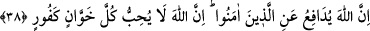
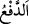
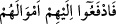
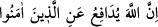
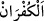
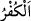
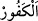
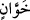
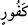

Kurban keserken, “Allâhu Ekber” dersin
Geberesi nefsi kurban ederken de böyle demeli
Beden İsmail gibidir, can ise İbrahim gibi
Can, koca beden üstüne tekbir getirir
Beden, şehvet ve hırstan kesilir
Namazda “Bismillâh” denilerek kurban edilir
38. Allah, îmân edenleri korur. Şu da muhakkak ki Allah, hain ve nankör olan
herkesi sevgisinden mahrum eder.
“Allah, îmân edenleri korur.” Müdâfaa eder.
Rağıb der ki: “__WORD__ kelimesi “ilâ” harf-i cerri ile müteaddî yapılırsa ulaştırma,
verme manasına gelir. Nitekim “__WORD__ Mallarını kendilerine verin.” (en-
Nisâ, 4/6) buyrulmuştur. Eğer “__WORD__” harf-i cerri ile müteaddî yapılırsa himâye
etmek/korumak anlamına gelir. Nitekim âyette “__WORD__ Allah, îmân
edenleri korur.” buyrulmuştur. Yâni mü’minlerden müşriklerin zararlarını uzaklaştırma
konusunda mübâlağa eder ve onların eziyetlerinden ziyâdesiyle korur.
“Şu da muhakkak ki Allah, hain” emir olsun ister yasak olsun ya da bunlardan başka
emânetler olsun Allah’ın emânetine çok hıyanet eden “ve nankör olan” nankörlükte ileri
giden “herkesi sevgisinden mahrum eder.” onların fiillerinden razı olmaz ve onlara
yardım etmez.
“__WORD__ nimeti inkârda daha çok kullanılır. “__WORD__ ise dini inkârda daha çok kullanılır.
“__WORD__ ise her ikisinde birlikte kullanılır. “__WORD__ ve “__WORD__ kelimelerinin mübâlağa
sıygası ile olması o kimselerin durumunun böyle olduğunu beyan etmek içindir. Yoksa
bazılarını son derece hâin ve nankör olmakla tahdid etmek için değildir. Çünkü sevginin
olmadığını bildirmek, buğzdan kinâyedir. Buğz ise kişinin arzu etmediği şeyden nefret
etmesidir. O sevginin zıddıdır. Sevgi ise kişinin arzu ettiği şeye cezbolunmasıdır.
Efendimiz (s.a.): “Allah söz ve fiillerinde çirkinlik yapana buğz eder.”[36]
buyurmuştur. Allah’ın bu kimselere buğz edeceğinin zikredilmesi, O’nun feyzinden ve
ihsanına tevfîkinden o kimsenin ne kadar uzak olduğuna dikkat çekmek içindir.
Âyette hâinlik ve nankörlük işlemekte devam eden kimsenin tevbe edemez hâle
geleceğine tenbih vardır. Tevbe etmeyince de Allah onu, tevbe edenlere ve
temizlenenlere vaad ettiği sevgi ile sevmez. Bu sevgi ise onları mükâfatlandırması ve
nimetlerini bahşetmesidir. Çünkü Allah’ın kula muhabbeti ona nimet vermesidir. Kulun
O’na muhabbeti ise O’na yakınlık istemesidir.
Bilesin ki hıyânet ve nifâk birdir. Çünkü “hıyânet” kelimesi söz ve emânet hakkında,